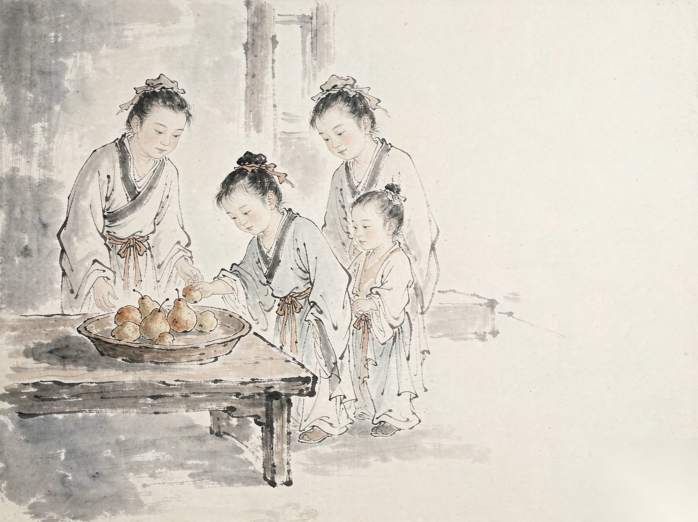

融四岁，能让梨
前面我们学习了对父母长辈常怀体恤、长久持守敬爱之心。这一句，把修习的范围往外扩一层。
从亲子之间，扩展到兄弟姐妹、同辈同伴之间。
孔融四岁的时候，和兄弟们一起分梨。盘子里的梨有大有小，他伸手，专门拿起最小的那一个。
大人问他原因，孔融说：哥哥年纪比我大，应当吃大梨；弟弟年纪比我小，我是兄长，应当谦让弟弟。

这里最珍贵的地方，不在于「不吃大梨」这件事。
四岁的孩子，本能都想要更大、更好的果子，想要优先满足自己。在本能想要争抢的那一瞬间，他看见了身边的兄长与幼弟，愿意把更好的份额留给别人。
同时一定要分清边界：礼让不等于一味委屈自己。
让，是心甘情愿的体谅；如果每一次都要强迫孩子让出喜欢的东西，变成一味牺牲、压抑欲望，那就不是礼让，是压抑本心。礼让是内心长出的宽厚，不是大人用来要求孩子的枷锁。

手足、同伴之间的和睦，就是从小小的取舍练习开始的。
只看见自己想要什么，优先满足自身欲望；得不到就哭闹，以自我为中心。
看见身边人的需求，愿意适度推让；懂得取舍，宽厚待人。
- 人本能会想要好东西，愿意谦让，是心里宽厚的成长。
- 礼让是发自本心的体谅，不是被逼迫着放弃。
- 手足、同伴之间的和睦，从小小的取舍练习开始。
- 宽厚的品性，就是在一件一件小事里慢慢养成。
这个故事最容易被用成一把尺子。三条提示，先护住孩子。
一、不拿孔融让梨做强制标准。不要对孩子说「孔融四岁就会让梨，你怎么这么小气」。小气是本能，谦让是需要慢慢修习的德性，不必苛责。
二、分清「礼让」和「无底线牺牲」。孩子的合理需求同样值得被尊重。可以引导分享，但不能要求孩子不断牺牲属于自己的东西。
三、承接教与学的二分。家长示范宽厚、稳定平和的家风，是施教一侧；能不能发自内心选择谦让，是孩子自主的修习选择。
接上选择力练习：宽厚是底色，孩子拥有拒绝不合理退让的权利，分享与谦让，优先尊重本心感受。
融四岁，能让梨
一 · 字义与句读让，推也，不争之谓。全句：孔融年仅四岁，便懂得手足之间推让和睦的道理。
事见《后汉书·孔融传》注引《融家传》：年四岁时，每与诸兄共食梨，融辄引小者。大人问其故，答曰：「我小儿，法当取小者。」由是宗族奇之。
承接孝亲一脉：孝为纵向人伦之敬，悌为横向同辈之让。孝悌并举，是儒家德行的根基。
二 · 命题考辨勘误重点：后世长期简化这个故事，变成「凡事都要让」的规训，扭曲本意。
这个公案的核心，是在私欲升起的当下，能够觉察、能够收敛自我中心，而不是无条件放弃权益。
《论语》言「克己复礼」，四岁的孔融已经在极小的事情上做到了「克己」——克制想要占有好物的本能。
同时厘清：悌，是手足和睦、互相体恤，不是弱者单方面退让。兄友弟恭是双向的：兄长爱护弟妹，弟妹敬重兄长。
三 · 中西对照《论语》：「孝悌也者，其为仁之本与。」孝悌是仁德最先生根之处。
发展心理学：幼儿早期是物权意识建立的关键期，分享与谦让是在确立自我边界之后向外发展共情；过早强迫分享，反而损伤安全感。
德性伦理：宽厚不是天生，是在一次次微小的取舍中反复练习而成。
反向思辨：过度宣扬无条件退让，容易形成讨好型人格，不敢维护自身合理边界，混淆谦让与软弱。
四 · 与前后课的张力伦理次第连贯：为人子（纵向亲子）→ 亲师友（向外交往）→ 香九龄孝亲（纵向孝）→ 融四岁让梨（横向悌）。
呼应第十三课「人不学，不知义」：义就是在取舍之间拿捏分寸；让梨，就是义在同辈相处中的实践。
呼应第十二课「玉不琢，不成器」：想要占有是先天本能，谦让宽厚是打磨习气、显发良知的修习。
呼应第四课「教之道，贵以专」：稳定和睦的家风，才能滋养这种宽厚心性。
一、当对方习惯性索取、持续消耗自己，「让」的边界在哪里？
二、如何区分发自本心的宽厚谦让，与害怕冲突、讨好他人的被动妥协？
三、现代独生子女家庭没有手足，这份「悌」的精神该如何落地练习？